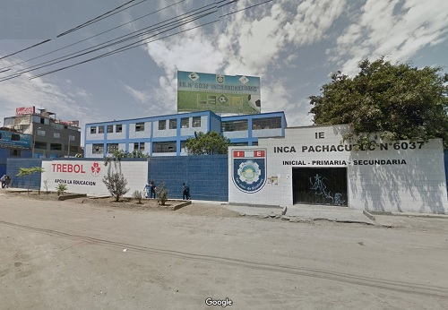
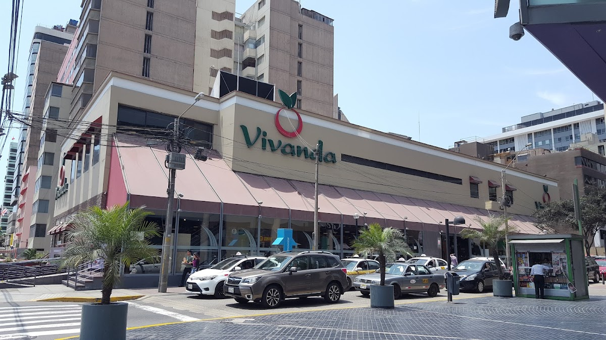

Me llamo Jose Maria y naci en 2003, estudie en el colegio I.E. Inca Pachacutec 6037 donde pase toda mi inicial, primaria y secundaria en el mismo colegio.

Actualmente tengo 23 años y como dije en la pagina de inicio, estoy trabajando como Encargado de Bebidas en V.Benavides, donde practicamente veo todo lo que es bebidas con y sin alchol,incluyendo licores. Antes de ser encargado de esa area era encargado de lacteos donde veia todo lo que era panaderia industrial, congelados, yogures, leches y huevos.
Me cambie de area debido que la "verdad" no me gustaba mi area y ps como habia vacante para bebidas decidi postular ahi aparte de que cuando investigue para la postulacion me termino interesando conocer sobre el mundo de los licores, aunque no soy de tomar mucho, ser encargado de bebidas es practicamente volverme un lider de area de abarrotes, lo cual resulta estresante, lo que no veia en lacteos lo estoy viendo aqui, tener que estar dirigiendo a la gente decirles que hacer sobre todo a los mercaderistas, tomar liderazgo, son cosas que aun me complican, puesto que yo estando en lacteos no hacia eso, y ahora lo estoy haciendo aqui como encargado de bebidas.
Aunque no todo es gris, tambien he llegado a aprender más cosas sobre los licores sobre sus clasificaciones, sus tipos, y sus lugares de origen. He llegado a aprender a diferenciar sobre todo con los vinos que es un mundo bien amplio, conocer los tipos de uva con las que mas se elaboran, como el cabernet sauvignon, malbec, syrah, tannat, cabernet franc ,carmenere, tempranillo todos son para elaborar un vino tinto o para elaborar un vino blanco se usa el sauvignon blanc, chardonay,pinot grigio, albariño, verdejo.
Son cosas que fui aprendiendo en este poco timepo que estoy aun en licores y que aprendere mas.

Pero bueno dejando de lado el trabajo, soy del tipo que no sale mucho de su casa, asi que me la paso
jugando videojuegos, ver series o animes, o el mas clasico dormir.
Eso lo abarcare en la siguiente pagina....